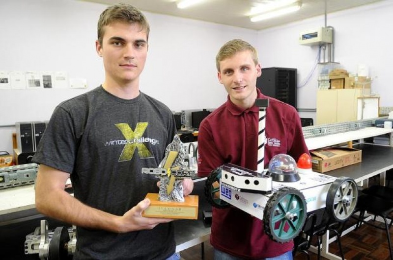

Robos Autonômos
O objetivo desses projetos é o desenvolvimento de robôs autônomos, que tenha a capacidade de locomoção em um ambiente real.
Utilizando tecnologias com GPS bussola, sensores de detecção de cor, sonares acústicos e infravermelho para detecção de objetos.
Seu desenvolvimento proporcionou aos acadêmicos envolvidos um enorme aprendizado, tanto na área de robótica como nas demais áreas utilizadas para a finalização do robô̂.

Robô Trecking — 1° Lugar no Campeonato Internacional Winter Challenge, décima edição
Acadêmicos de Sistemas da Informação Joe Vogel e João Smitch
Saiba maisResultados:
Campeonato no Winter Challenge X:- Eather Rover
- 1° Lugar
- Eather Rover
- 4° Lugar